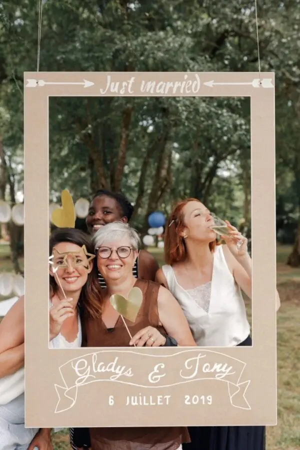
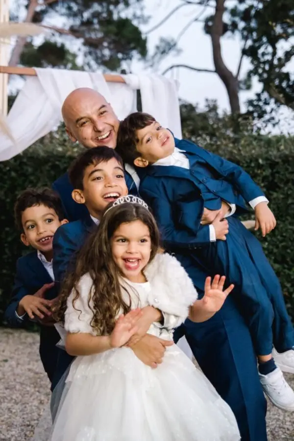
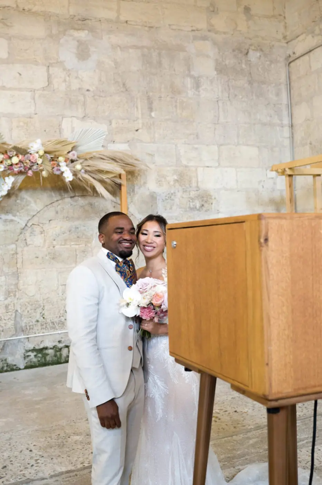

Animation originale
Quels sont les moyens à mettre en place pour conserver ses souvenirs de son union en région Bordelaise ?



Le traditionnel livre d’or est aussi un moyen de collecter les moments forts. Il peut également prendre plusieurs formes afin qu’il se lie parfaitement à votre thème. Pour garder un souvenir plus intense de votre amour ce jour-là, pourquoi pas réaliser un rituel de cérémonie lors de votre cérémonie laïque. Ce moment fort sera peut-être le plus intense, car il représentera totalement votre union et sera un beau symbole.
En tant que Wedding Planner et Wedding Designer, je peux vous donner tous les conseils pour organiser votre mariage et garder en mémoire vos meilleurs moments. Mais si vous souhaitez louer une borne photo, j’ai ce qu’il vous faut, n’hésitez pas à me contacter !
Le mariage est un jour tellement unique que tout le monde souhaite qu’il soit parfait. C’est notre union avec l’amour de notre vie alors il ne faut pas oublier le moindre détail.
En rendant, ce jour parfait, les souvenirs seront plus forts. Conserver les bons moments est quelque chose de grandiose quand on sait que nous pourrons les sortir des années plus tard en se remémorant le bon temps.
Voici donc plusieurs moyens de conserver tous les moments de votre mariage. Bien sûr la première étape est de trouver un bon photographe qui capturera les moindres éclats de rire, émotions et actions de votre mariage. Vous pouvez également trouver un vidéaste qui filmera toute votre journée pour en faire un petit film sur votre amour. C’est un moyen idéal pour les fans de cinéma.
La mise en place d’un photobooth ou d’un wedshoot peut également inviter vos convives à participer à votre collection de souvenirs. C’est aussi des moments entre amis à ne pas oublier.

Lovely Day Event c'est plusieurs types de prestations
L'organisation de mariage
Je vais intervenir sur toutes les étapes de vos préparatifs et vous guider dans vos choix. Je suis force de proposition pour que votre mariage ne ressemble qu’à vous.
Décoration de mariage
Créative et passionnée, je suis certifiée Wedding Designer et je conçois une ambiance scénographique qui correspond au thème de votre mariage.
Coordination le jour J
Je serai le chef d’orchestre pour gérer les différents prestataires, la mise en place de votre décoration et le déroulement de cette belle journée.